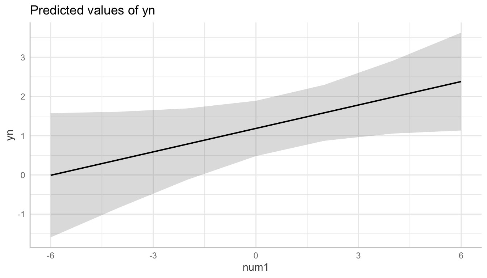
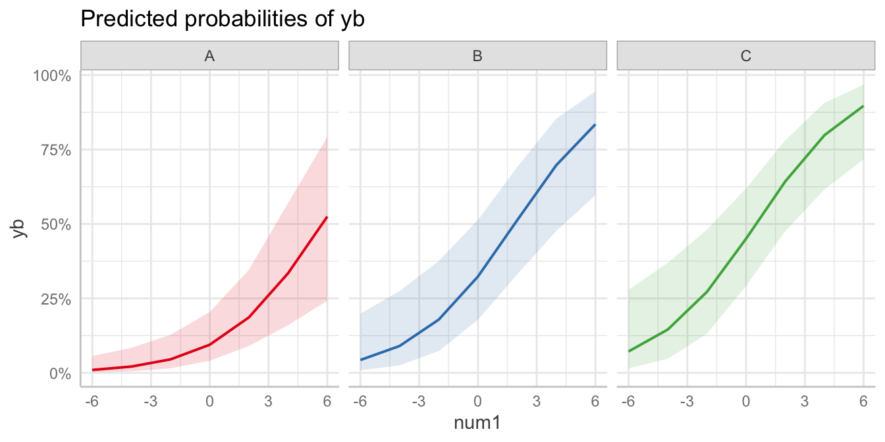
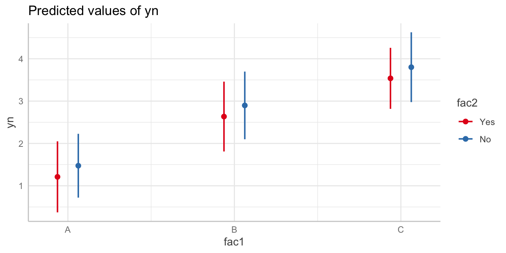

library(broom)scratch
Topics for Today
Working with Model Results
- Tidy model output with
broom - Visualizing models with
ggeffects - Tables with
gt,modelsummary, andgtsummary
Reproducible Research
Best Practices
- Organization
- Portability
- Version Control
Wrapping up the course
Working with Model Results
broom
broom is a package that “tidies up” the output from models such a lm() and glm().
It has a small number of key functions:
tidy()- Creates a dataframe summary of a model.augment()- Adds columns—such as fitted values—to the data used in the model.glance()- Provides one row of fit statistics for models.
Model Output is a List
lm() and summary() produce lists as output, which cannot go directly into tidyverse functions, particularly those in ggplot2.
lm_1 <- lm(yn ~ num1 + fac1, data = ex_dat)
summary(lm_1)
Call:
lm(formula = yn ~ num1 + fac1, data = ex_dat)
Residuals:
Min 1Q Median 3Q Max
-6.9278 -1.7483 0.0797 1.7133 6.9180
Coefficients:
Estimate Std. Error t value Pr(>|t|)
(Intercept) 1.2368 0.4023 3.074 0.00241 **
num1 0.6080 0.1083 5.616 6.61e-08 ***
fac1B 1.0854 0.5196 2.089 0.03799 *
fac1C 2.5245 0.5230 4.827 2.78e-06 ***
---
Signif. codes: 0 '***' 0.001 '**' 0.01 '*' 0.05 '.' 0.1 ' ' 1
Residual standard error: 2.874 on 196 degrees of freedom
Multiple R-squared: 0.2308, Adjusted R-squared: 0.219
F-statistic: 19.6 on 3 and 196 DF, p-value: 3.732e-11
....Model Output Varies!
Each type of model also produces somewhat different output, so you can’t just reuse the same code to handle output from every model.
glm_1 <- glm(yb ~ num1 + fac1, data = ex_dat, family=binomial(link="logit"))
summary(glm_1)
Call:
glm(formula = yb ~ num1 + fac1, family = binomial(link = "logit"),
data = ex_dat)
Coefficients:
Estimate Std. Error z value Pr(>|z|)
(Intercept) -1.38172 0.34647 -3.988 6.66e-05 ***
num1 0.34216 0.08952 3.822 0.000132 ***
fac1B 0.84734 0.40377 2.099 0.035853 *
fac1C 1.56168 0.41602 3.754 0.000174 ***
---
Signif. codes: 0 '***' 0.001 '**' 0.01 '*' 0.05 '.' 0.1 ' ' 1
(Dispersion parameter for binomial family taken to be 1)
Null deviance: 276.76 on 199 degrees of freedom
Residual deviance: 244.41 on 196 degrees of freedom
AIC: 252.41
....broom::tidy()
tidy() produces similar output, but as a dataframe.
lm_1 %>% tidy()# A tibble: 4 × 5
term estimate std.error statistic p.value
<chr> <dbl> <dbl> <dbl> <dbl>
1 (Intercept) 1.24 0.402 3.07 0.00241
2 num1 0.608 0.108 5.62 0.0000000661
3 fac1B 1.09 0.520 2.09 0.0380
4 fac1C 2.52 0.523 4.83 0.00000278 Each type of model (e.g. glm, lmer) has a different method with its own additional arguments. See ?tidy.lm for an example.
broom::tidy()
This output is also completely identical between different models.
This can be very useful and important if running models with different test statistics… or just running a lot of models!
glm_1 %>% tidy()# A tibble: 4 × 5
term estimate std.error statistic p.value
<chr> <dbl> <dbl> <dbl> <dbl>
1 (Intercept) -1.38 0.346 -3.99 0.0000666
2 num1 0.342 0.0895 3.82 0.000132
3 fac1B 0.847 0.404 2.10 0.0359
4 fac1C 1.56 0.416 3.75 0.000174 broom::glance()
glance() produces dataframes of fit statistics for models.
If you run many models, you can compare each model row-by-row in each column… or even plot their different fit statistics to allow holistic comparison.
glance(lm_1)# A tibble: 1 × 12
r.squared adj.r.squared sigma statistic p.value df logLik AIC BIC
<dbl> <dbl> <dbl> <dbl> <dbl> <dbl> <dbl> <dbl> <dbl>
1 0.231 0.219 2.87 19.6 3.73e-11 3 -493. 996. 1012.
# ℹ 3 more variables: deviance <dbl>, df.residual <int>, nobs <int>broom::augment()
augment() takes values generated by a model and adds them back to the original data. This includes fitted values, residuals, and leverage statistics.
augment(lm_1) %>%
head()# A tibble: 6 × 9
yn num1 fac1 .fitted .resid .hat .sigma .cooksd .std.resid
<dbl> <dbl> <fct> <dbl> <dbl> <dbl> <dbl> <dbl> <dbl>
1 1.60 0.583 B 2.68 -1.08 0.0141 2.88 0.000512 -0.379
2 11.5 1.76 C 4.83 6.64 0.0148 2.84 0.0204 2.33
3 9.26 0.350 C 3.97 5.29 0.0148 2.86 0.0129 1.85
4 0.826 -0.480 A 0.945 -0.119 0.0209 2.88 0.00000940 -0.0420
5 5.10 1.61 B 3.30 1.80 0.0132 2.88 0.00134 0.632
6 -2.90 -0.962 C 3.18 -6.08 0.0198 2.85 0.0230 -2.13 See ?augment.lm for examples of what augment() can do.
The Power of broom
The real advantage of broom becomes apparent when running many models at once. Here we run separate models for each level of fac1:
ex_dat %>%
nest_by(fac1) %>% #<<
mutate(model = list(lm(yn ~ num1 + fac2, data = data))) %>%
summarize(tidy(model), .groups = "drop")Warning: Returning more (or less) than 1 row per `summarise()` group was deprecated in
dplyr 1.1.0.
ℹ Please use `reframe()` instead.
ℹ When switching from `summarise()` to `reframe()`, remember that `reframe()`
always returns an ungrouped data frame and adjust accordingly.# A tibble: 9 × 6
fac1 term estimate std.error statistic p.value
<fct> <chr> <dbl> <dbl> <dbl> <dbl>
1 A (Intercept) -0.0447 0.522 -0.0857 0.932
2 A num1 0.746 0.167 4.48 0.0000442
3 A fac2No 2.24 0.695 3.22 0.00224
4 B (Intercept) 1.71 0.417 4.11 0.000104
5 B num1 0.788 0.154 5.11 0.00000252
6 B fac2No 0.737 0.550 1.34 0.184
7 C (Intercept) 3.94 0.635 6.20 0.0000000373
8 C num1 0.291 0.223 1.30 0.197
9 C fac2No 0.306 0.811 0.377 0.708 nest_by() nests data into a list column by levels of fac1.
Plotting Model Results
geom_smooth()
I have used geom_smooth() in many past examples.
geom_smooth() generates “smoothed conditional means” including loess curves and generalized additive models (GAMs).
. . .
Note, however, that most regression models are conditional mean models, such as ordinary least squares and generalized linear models.
. . .
We can use geom_smooth() to add a layer depicting common bivariate models.
We’ll look at this with the gapminder data from Week 2.
library(gapminder). . .
Default geom_smooth()
ggplot(data = gapminder, aes(x = year, y = lifeExp, color = continent)) +
geom_point(position = position_jitter(1, 0), size = 0.5) +
geom_smooth()`geom_smooth()` using method = 'loess' and formula = 'y ~ x'
By default, geom_smooth() chooses either a loess smoother (N < 1000) or a GAM depending on the number of observations.
Linear glm
ggplot(data = gapminder, aes(x = year, y = lifeExp, color = continent)) +
geom_point(position = position_jitter(1,0), size = 0.5) +
geom_smooth(method = "glm", formula = y ~ x)We could also fit a standard linear model using either method = "glm" or method = "lm" and a formula like y ~ x.
Polynomial glm
ggplot(data = gapminder, aes(x = year, y = lifeExp, color = continent)) +
geom_point(position = position_jitter(1,0), size = 0.5) +
geom_smooth(method = "glm", formula = y ~ poly(x, 2)) poly(x, 2) produces a quadratic model which contains a linear term (x) and a quadratic term (x^2).
More Complex Models
What if we want something more complex than a bivariate model?
What if we have a statistically complex model, like nonlinear probability model or multilevel model?
We need to go beyond geom_smooth()!
But first, vocab!
We are often interested in what might happen if some variables take particular values, often ones not seen in the actual data.
. . .
When we set variables to certain values, we refer to them as counterfactual values or just counterfactuals.
. . .
For example, if we know nothing about a new observation, our prediction for that estimate is often based on assuming every variable is at its mean.
. . .
Sometimes, however, we might have very specific questions which require setting (possibly many) combinations of variables to particular values and making an estimate or prediction.
. . .
Providing specific estimates, conditional on values of covariates, is a nice way to summarize results, particularly for models with unintuitive parameters (e.g. logit models).
ggeffects
ggeffects
If we want to look at more complex models, we can use ggeffects to create and plot tidy marginal effects.
That is, tidy dataframes of ranges of predicted values that can be fed straight into ggplot2 for plotting model results.
We will focus on two ggeffects functions:
ggpredict()- Computes predicted values for the outcome variable at margins of specific variables.plot.ggeffects()- A plot method forggeffectsobjects (likeggpredict()output)
library(ggeffects)Quick Simulated Data
To best show off ggeffects, I need a data frame with numeric and categorical variables with strong relationships. It is easiest to just simulate it:
ex_dat <- data.frame(num1 = rnorm(200, 1, 2),
fac1 = sample(c(1, 2, 3), 200, TRUE),
num2 = rnorm(200, 0, 3),
fac2 = sample(c(1, 2))) %>%
mutate(yn = num1 * 0.5 + fac1 * 1.1 + num2 * 0.7 +
fac2 - 1.5 + rnorm(200, 0, 2)) %>%
mutate(yb = as.numeric(yn > mean(yn))) %>%
mutate(fac1 = factor(fac1, labels = c("A", "B", "C")),
fac2 = factor(fac2, labels = c("Yes", "No")))
glimpse(ex_dat)Rows: 200
Columns: 6
$ num1 <dbl> -0.45014624, 1.03493712, 3.42843174, 1.36083964, 2.76882846, 3.85…
$ fac1 <fct> C, B, A, A, C, B, B, A, B, A, A, C, B, B, B, C, A, C, B, A, B, B,…
$ num2 <dbl> 2.6583679, 0.3557909, -5.2896277, -4.4824902, 3.0269356, 1.738611…
$ fac2 <fct> No, Yes, No, Yes, No, Yes, No, Yes, No, Yes, No, Yes, No, Yes, No…
$ yn <dbl> 6.5666766, 5.3085002, -1.9277200, -1.3685167, 6.6159192, 3.143335…
$ yb <dbl> 1, 1, 0, 0, 1, 1, 1, 0, 0, 1, 1, 1, 1, 0, 1, 1, 0, 0, 1, 1, 1, 0,…Now we can get ggpredicting!
ggpredict()
When you run ggpredict(), it produces a dataframe with a row for every unique value of a supplied predictor (“independent”) variable (term).
Each row contains an expected (estimated) value for the outcome (“dependent”) variable, plus confidence intervals.
lm_1 <- lm(yn ~ num1 + fac1, data = ex_dat)
lm_1_est <- ggpredict(lm_1, terms = "num1")If desired, the argument interval = "prediction" will give predicted intervals instead.
ggpredict() output
lm_1_est# Predicted values of yn
num1 | Predicted | 95% CI
------------------------------
-6 | -0.01 | -1.59, 1.57
-4 | 0.39 | -0.83, 1.61
-2 | 0.79 | -0.12, 1.70
0 | 1.19 | 0.48, 1.89
2 | 1.58 | 0.87, 2.30
4 | 1.98 | 1.05, 2.91
6 | 2.38 | 1.13, 3.63
Adjusted for:
* fac1 = Aplot() for ggpredict()
ggeffects features a plot() method, plot.ggeffects(), which produces a ggplot when you give plot() output from ggpredict().
plot(lm_1_est)
Grouping with ggpredict()
When using a vector of terms, ggeffects will plot the first along the x-axis and use others for grouping. Note we can pipe a model into ggpredict()!
glm(yb ~ num1 + fac1 + num2 + fac2, data = ex_dat, family = binomial(link = "logit")) %>%
ggpredict(terms = c("num1", "fac1")) %>%
plot()
Faceting with ggpredict()
You can add facet = TRUE to the plot() call to facet over grouping terms.
glm(yb ~ num1 + fac1 + num2 + fac2, data = ex_dat, family = binomial(link = "logit")) %>%
ggpredict(terms = c("num1", "fac1")) %>%
plot(facet = TRUE)Data were 'prettified'. Consider using `terms="num1 [all]"` to get
smooth plots.
Counterfactual Values
You can add values in square brackets in the terms = argument to specify counterfactual values.
glm(yb ~ num1 + fac1 + num2 + fac2, data = ex_dat, family = binomial(link = "logit")) %>%
ggpredict(terms = c("num1 [-1,0,1]", "fac1 [A,B]")) %>% plot(facet = TRUE)Representative Values
You can also use [meansd] or [minmax] to set representative values.
glm(yb ~ num1 + fac1 + num2 + fac2, data = ex_dat, family = binomial(link = "logit")) %>%
ggpredict(terms = c("num1 [meansd]", "num2 [minmax]")) %>% plot(facet = TRUE)
Dot plots with ggpredict()
ggpredict will produce dot plots with error bars for categorical predictors.
lm(yn ~ fac1 + fac2, data = ex_dat) %>%
ggpredict(terms = c("fac1", "fac2")) %>%
plot()Ignoring unknown labels:
• linetype : "fac2"
• shape : "fac2"
Notes on ggeffects
There is a lot more to the ggeffects package that you can see in the package vignette and the github repository. This includes, but is not limited to:
- Predicted values for polynomial and interaction terms
- Getting predictions from models from dozens of other packages
- Sending
ggeffectsobjects toggplot2to freely modify plots
Making Tables
pander Regression Tables
We’ve used pander to create nice tables for dataframes. But pander has methods to handle all sort of objects that you might want displayed nicely.
This includes model output, such as from lm(), glm(), and summary().
library(pander)pander() and lm()
You can send an lm() object straight to pander:
pander(lm_1) # this creates an markdown-formatted chunk of text you can add to your qmd document| Estimate | Std. Error | t value | Pr(> | |
|---|---|---|---|---|
| (Intercept) | 1.003 | 0.3866 | 2.594 | 0.01019 |
| num1 | 0.6407 | 0.1047 | 6.118 | 5.06e-09 |
| fac1B | 1.675 | 0.5341 | 3.137 | 0.001972 |
| fac1C | 2.16 | 0.5349 | 4.038 | 7.719e-05 |
pander() and summary()
You can do this with summary() as well, for added information:
pander(summary(lm_1))| Estimate | Std. Error | t value | Pr(> | |
|---|---|---|---|---|
| (Intercept) | 1.003 | 0.3866 | 2.594 | 0.01019 |
| num1 | 0.6407 | 0.1047 | 6.118 | 5.06e-09 |
| fac1B | 1.675 | 0.5341 | 3.137 | 0.001972 |
| fac1C | 2.16 | 0.5349 | 4.038 | 7.719e-05 |
| Observations | Residual Std. Error | \(R^2\) | Adjusted \(R^2\) |
|---|---|---|---|
| 200 | 3.093 | 0.2126 | 0.2005 |
Advanced Tables
pander tables are great for basic rmarkdown documents, but they’re not generally publication ready.
We’re going to talk about a few different approaches for making nicer tables:
gtfrom RStudio for general table constructionmodelsummaryfor creating model tablesgtsummaryfor creating data summaries
gt
If you need to more customizability or different output types, RStudio’s gt package is a new and powerful system for creating tables from dataframes. We’ll use dplyr’s built-in starwars data for some examples.
library(gt)
tes_chars <- starwars %>%
unnest(films) %>%
unnest(starships, keep_empty = TRUE) %>%
filter(films == "The Empire Strikes Back") %>%
select(name, species, starships, mass, height) %>%
distinct(name, .keep_all = TRUE) %>%
mutate(starships = ifelse(name == "Obi-Wan Kenobi" | is.na(starships),
"No Ship", starships))
glimpse(tes_chars)Rows: 16
Columns: 5
$ name <chr> "Luke Skywalker", "C-3PO", "R2-D2", "Darth Vader", "Leia Org…
$ species <chr> "Human", "Droid", "Droid", "Human", "Human", "Human", "Wooki…
$ starships <chr> "X-wing", "No Ship", "No Ship", "TIE Advanced x1", "No Ship"…
$ mass <dbl> 77.0, 75.0, 32.0, 136.0, 49.0, 77.0, 112.0, 80.0, 77.0, 17.0…
$ height <int> 172, 167, 96, 202, 150, 182, 228, 180, 170, 66, 170, 183, 20…Initialize
tes_chars %>%
gt() gt() just renders the dataframe as a table using markdown.